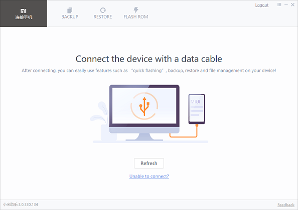
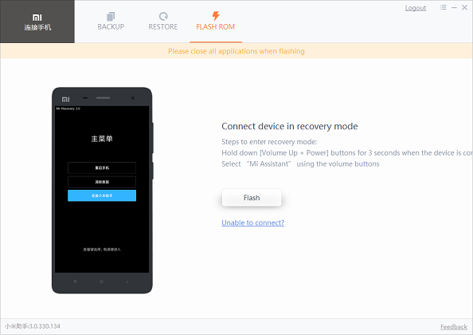

Here is what you will need:
1. USB cable
2. A computer (Windows)
3. Mi Phone Assistant
4. Stock Firmware
Mi Phone Assistant (translated)


play_for_workDownload
About
Folder
Flashing firmware
Following the steps bellow will get your device back to the original state as long as it can reach Stock Recovery.
- 1. Download the recovery rom your need from HERE
- 2. Reboot your device to recovery (hold power + volume-up for 10 seconds)
- 3. Navigate to the Mi Assistant option using the volume buttons and press power
- 4. Connect your phone to the computer through a USB cable.
- 5. Unzip MiPhoneAssistant.zip to a folder you want and open that folder
- 6. Double click MiPhoneAssistant.exe
- 7. Login into your Mi Account
- 8. Go to the Flash ROM section and click Flash
- 9. Choose which option you want
- 10. Choose the .zip file of the firmware you have downloaded at step 1
- 11. How have patience. The phone will now show an Updating MIUI screen while the computer flashes it. Do not disconnect the cable and do not close MiPhoneAssistant at any point
- 12. The device will reboot itself after it's done. Good luck!
Warning, if anything goes wrong, I am not responsable for any of the harm done. It worked on my device and it should work on yours too as long as you have followed the steps. Contact your local device Telegram group in case something goes wrong.
Credits
- @JY.Nick for creating the tool (source)
- AndroidGirl on Telegram